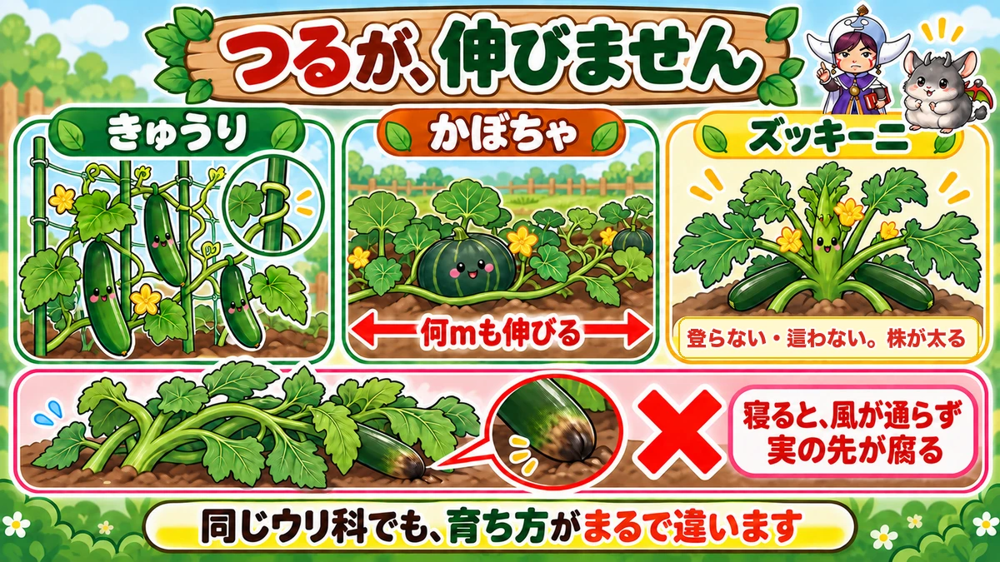
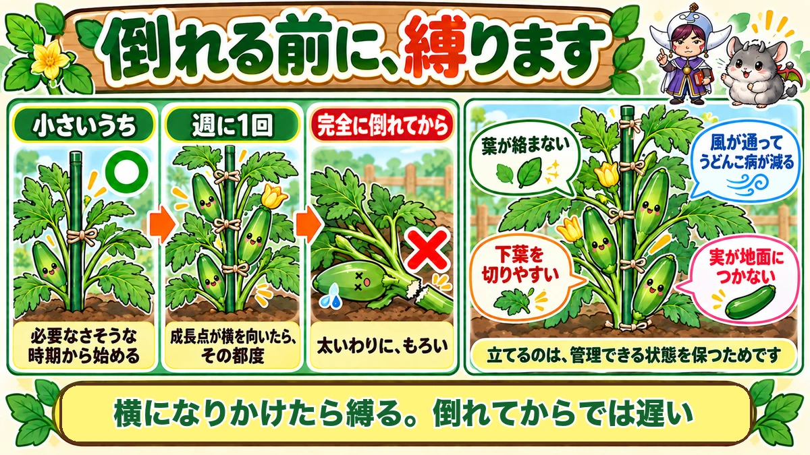
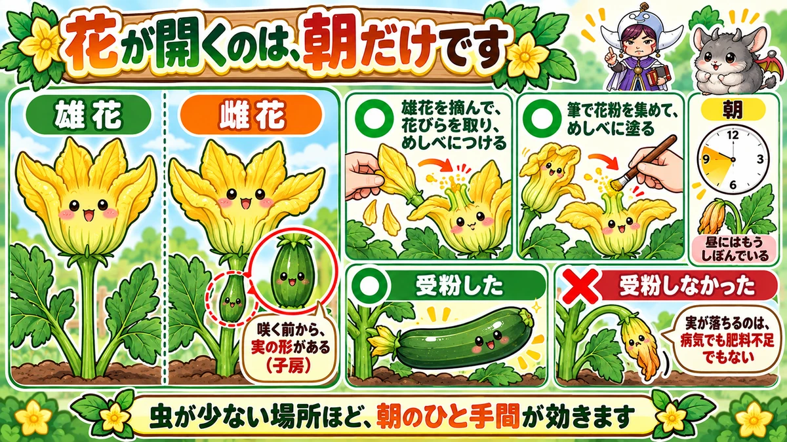

Tie a courgette to a cane and grow it upright 🥒 It's a cucurbit that never vines

🥒 "Fruit set and then dropped off without growing."
🥒 "The plant has spread sideways across the path."
🥒 "The end of the fruit always goes mushy."
Hello, I'm Eiko. Eight years of growing vegetables organically and without pesticides, and a teaching licence in science.
A courgette looks exactly like a cucumber. It is grown completely differently.
The headline:
Tie a courgette to a cane and grow it upright.
A cucurbit whose vines don't run — that's the strange thing about this plant.
And grow at least two plants
The first trap. A single plant sets fruit poorly.
The reason comes later — but plant at least two, 80–100 cm apart.
Short of space? Squeeze them closer, but still grow two. Two tight plants beat one with lots of room.
The vines don't run

What this diagram says （図解の文字）
- The vines don't run
- cucumber ／ squash — "← extends metres →"
- courgette — "doesn't climb, doesn't trail. The plant itself thickens"
- ✗ "lying down, no air moves and the fruit rots from the tip"
A cucumber winds up netting. A squash trails metres across the ground. A courgette does neither.
Nothing you'd call a vine extends — the plant itself just gets thick and large.
Instead, it lies down
Left alone, it falls sideways. The stem is thick and heavy and it topples under its own weight, then spreads along the ground.
And then
- Leaves overlap and the air stops moving
- Fruit touches the soil → rots from the tip
- Leaves tangle and you can't find the fruit
- Powdery mildew appears
"The end of the fruit goes mushy" is, almost always, this.
Tie it to a cane

What this diagram says （図解の文字）
- Tie it before it falls
- ○ "while it's small" — "start when it looks unnecessary"
- "Once a week" — "whenever the growing point turns sideways"
- ✗ "once it's fully over" — "thick, and yet brittle"
Simple enough: one cane beside the plant, and tie the stem to it.
The important part is starting early — while it's still small and shows no sign of falling. The moment it feels unnecessary is the right moment.
Re-tie weekly
It grows upward, so the tying point moves up with it. I check and re-tie once a week. It's a chore, honestly — and skip it and the plant lies down.
Too late once it's over
Try to lift a plant that has fallen completely and the stem snaps. A courgette stem is thick and surprisingly brittle. I did it once, and that plant was finished.
So: tie it when it starts to lean. Intervene before it goes over.
Upright makes every job easier
- The leaves don't tangle, so you can see the fruit
- Removing lower leaves is easy
- Air moves, so less powdery mildew
- Fruit doesn't touch soil, so it doesn't rot
- It doesn't block the path
Staking isn't really for the harvest — it's for keeping the plant manageable.
Pollination happens in the morning only

What this diagram says （図解の文字）
- The flowers only open in the morning
- male flower ／ female flower — "the fruit shape is there before it opens (the ovary)"
- ○ "pick a male flower, strip the petals, apply it to the stigma"
- ○ "collect pollen with a brush and paint the stigma"
Courgette flowers are large and handsome, much like squash flowers. And they only open in the morning.
Go out at midday and they've already closed. Which means pollination is a morning job, or it doesn't happen.
A female flower already has a fruit on it
There are male and female flowers, and a female flower has a courgette-shaped swelling below it before it even opens.
It looks like a small courgette with a flower sitting on top. First-timers say "there's already a fruit!"
Two ways to do it
- Pick a male flower, strip the petals, and rub it directly on the stigma
- Collect the pollen on a brush and paint it on
Either works. I use a brush — one item to carry, which makes it easy to keep up.
Where there are few insects, it's essential
"Won't it pollinate itself?" If bees are visiting, yes.
On a balcony, or where there are few other plots nearby, there aren't enough insects — and those are exactly the places where hand-pollination shows.
And that's also why one plant sets poorly: with no partner shedding pollen, nothing starts.
Harvest, and after
Pick at 20 cm
20 cm (8 in) long and 3–4 cm (1½ in) thick. Earlier than people expect — larger means worse flavour and a tired plant. The same story as okra.
Cut the lower leaves
As picking progresses, remove the leaves below the fruit you've already taken. Whitish or yellowing leaves are the marker — they've stopped photosynthesising.
Cutting them lets air through and encourages new flowers, which extends the picking season.
With the plant upright, this job is easy. On a plant lying down, you start by pushing leaves aside.
Bicarbonate for powdery mildew
White bloom on the leaves is powdery mildew — the cucurbit's lot. I use 1 g of bicarbonate of soda in 1 litre of water.
Not a pesticide. Act early — once it has spread you won't catch up.
Science bit: that swelling is waiting for pollen 🔬
Back to the swelling under the female flower. That's the ovary — the chamber at the base of the pistil, with the future seeds arranged inside.
In cucurbits the ovary sits below the flower, which is why the fruit shape is visible before it opens.
Without pollination it stops there
Unpollinated, that swelling doesn't grow. It yellows, shrivels and drops.
That's what "fruit set and then fell off" is. Not disease, not a feeding problem — the pollen simply didn't arrive.
The same thing as a gappy corn cob: different structure, identical logic. You get fruit in proportion to pollination.
To sum up
- ✅ A cucurbit whose vines don't run
- ✅ 80–100 cm apart, and always at least two plants
- ✅ Left alone it lies down, tangles, and the fruit rots
- ✅ Tie it to a cane while it's still small
- ✅ Re-tie weekly
- ✅ Lifting a fallen plant snaps the stem
- ✅ Upright makes leaf-removal, picking and airflow all easier
- ✅ The flowers open only in the morning
- ✅ A female flower has the fruit shape before it opens
- ✅ Male flower directly, or pollen on a brush
- ✅ Pick at 20 cm long, 3–4 cm thick
- ✅ Cut leaves below picked fruit; bicarbonate for mildew
- ✅ Fruit that drops was never pollinated
You don't have to do all of it. Put one cane in beside the plant. That alone makes this vegetable manageable 🥒
Thank you for reading!